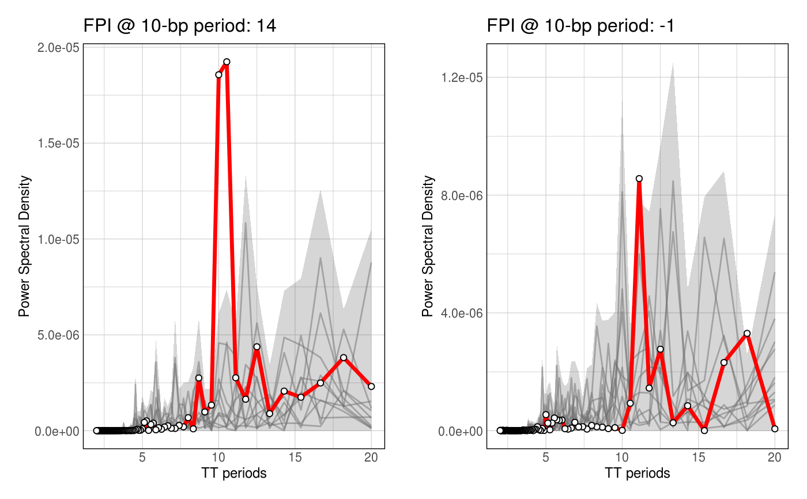

This function takes a GRanges and a k-mer of interest, along with a given period. It calculates the FPI, as introduced by Pich et al., Cell 2018.
# S3 method for GRanges getFPI(x, genome, ...)
| x | GRanges, GRanges of interest |
|---|---|
| genome | Genome ID or BSgenome |
| ... | Additional arguments |
Several metrics including FPI, observed PSD, etc...
The FPI is calculated as the ratio of the observed k-mer PSD at the chosen perdiod subtracted by the median k-mer PSD in shuffled sequences, divided by the median k-mer PSD in shuffled sequences. The number of shufflings is specified by the n_shuffling argument.
data(ce11_TSSs) fpi <- getFPI( ce11_TSSs[['Ubiq.']][1:10], genome = 'ce11', motif = 'TT', cores_shuffling = 1 )#>#>#>#>#>#>#>#>#>#>#>#>#>#>#>#>#>#>fpi$FPI#> [1] 22.97493fpi$observed_PSD#> [1] 9.025655e-07fpi$shuffled_PSD#> [1] 6.375603e-08 4.841936e-08 5.823182e-09 2.687309e-08 2.077292e-07 #> [6] 7.405588e-08 7.922293e-09 8.013376e-09 2.224144e-08 7.169595e-08p1 <- plotFPI(fpi) fpi <- getFPI( ce11_TSSs[['Muscle']][1:10], genome = 'ce11', motif = 'TT', cores_shuffling = 1 )#>#>#>#>#>#>#>#>#>#>#>#>#>#>#>#>#>#>fpi$FPI#> [1] 0.6264116fpi$observed_PSD#> [1] 3.176686e-08fpi$shuffled_PSD#> [1] 5.661027e-08 4.791134e-09 8.936022e-08 1.220300e-08 4.487382e-08 #> [6] 2.686074e-08 9.128840e-10 1.223240e-09 2.386138e-09 4.882938e-08#>#>#> Warning: Removed 1001 rows containing missing values (geom_point).#> Warning: no non-missing arguments to max; returning -Inf#>#>#> Warning: Removed 1001 rows containing missing values (geom_point).#> Warning: no non-missing arguments to max; returning -Inf